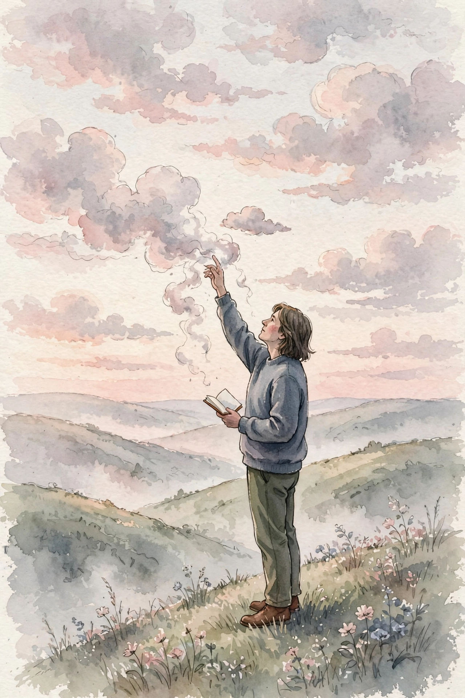
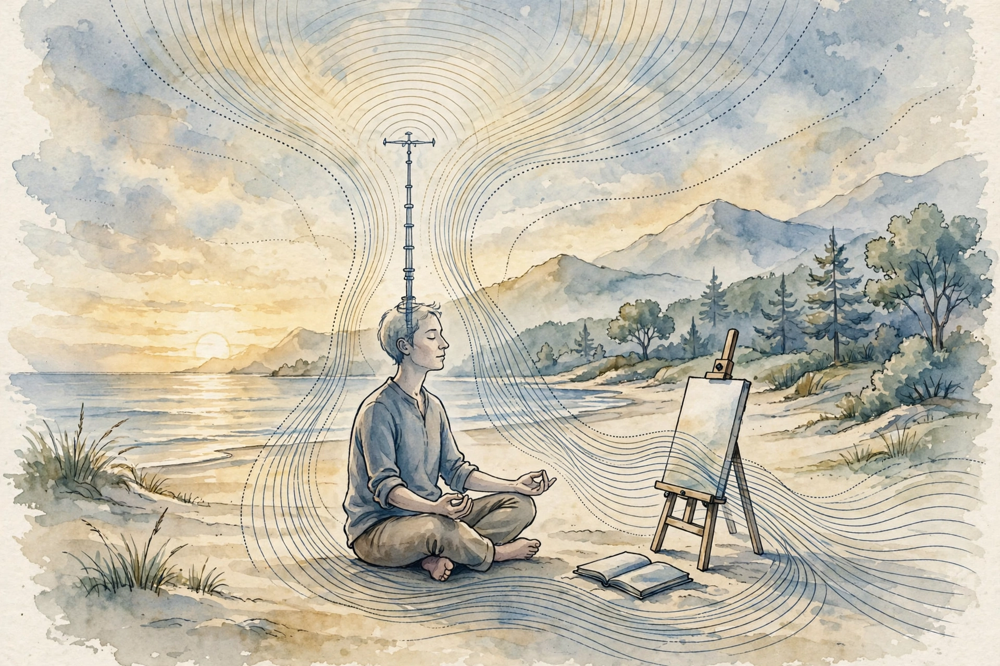

Huberman Lab · Episode 9 · Companion
Catching the Cloud
Rick Rubin gives you a working creator's operating manual: catch every idea like weather, read the body's signal, run four phases with different rules each, and doubt your way to a masterpiece. This companion follows the conversation in order.

Illustration. Ideas are weather: catch them or lose them. Made for this page. AI-generated watercolor in a New Yorker style, made for this page. It carries no words or labels.
Watch. The official episode video on youtube-nocookie, the only external dependency on this page. Use the chapter menu above to jump to any section of this companion as you listen.
The Wisdom Index: every nugget in this companion
Ideas are a cloud
SOURCE FACT Huberman opens with the anchor story: the musician Joe Strummer once blurted out in an interview that if you have an idea, you have to write it down. You may end up throwing it away, but if you wait, it will be gone. Huberman built a whole capture system around that line. Rubin answers with the dream version of the same rule: dreams do not make sense, and if you start writing them down, they come back. They arrive as abstract images you may never fully understand. That is exactly how art-making works: you search for a feeling in yourself and you follow it.
Nugget 1 · Write it down
SOURCE FACT An idea appears with a shape, changes shape, then is gone, usually within the hour. INTERPRETATION Writing is the only part you control. Memory is not a capture system.
SOURCE FACT The practical consequence: your phone note, a voice memo, a scrap of paper all count. The only system that fails is the one that lives in your head. Rubin adds the motive rule: he learns things because they interest him, not because he plans to use them. Most of his notes are for no one else. The interesting things find their way into projects on their own.
Nugget 2 · The cloud rule
SOURCE FACT Capture within the minute, even if you throw the note away later. INTERPRETATION Collect for interest, not for use. The interesting things join projects by themselves.
Creativity is a body signal, not a thought
SOURCE FACT Rubin locates creativity in the body. When he is near something worth making, he feels it as a physical event: a surge of energy, a feeling of excitement or enthusiasm or curiosity, a leaning forward. The signal has no single location, and intellect does not generate it. Asked whether it is a thought or a sensation, he answers: “It’s a feeling in my body.”
Nugget 3 · The body signal
SOURCE FACT The signal arrives as feeling first: the surge, the leaning forward. INTERPRETATION If you try to think your way to a creative idea, you use the wrong organ. The thinking comes later, when you shape what you caught.
SOURCE FACT This is why language fails the creative process. Huberman notes that words may be the wrong instrument entirely, like trying to reach prime numbers with even numbers. Rubin agrees and gives the line that organizes the whole episode:
I think language is insufficient to drill down on creativity. It’s closer to magic than it is science.
Rick Rubin.

SOURCE FACT Rubin names the larger frame: the source. The source is the organizing principle of everything: how the trees grow, why there are mountains. Every discovery, every piece of art, every new design, every machine is an outgrowth of this source energy. Our part is the antenna: we are the vehicle through which the source lets things happen in the world. Huberman adds the boundary condition: the physical world is constrained by the laws of physics, and the imagination is unconstrained. The work sits between the two.
Nugget 4 · Tune the antenna
SOURCE FACT You cannot force the source. You can only tune the antenna. INTERPRETATION Attention, presence, and capture are the tuning knobs.
New ideas are new combinations
SOURCE FACT Rubin rejects the romance of pure invention. The most interesting things, he says, are familiar elements joined together in a way he has never seen before. A new combination of existing ideas, presented in a new way. INTERPRETATION The search space is enormous. Illustrative arithmetic on the analogy: five elements chosen from one hundred give over 75 million possible combinations. Originality is a search problem, not a creation problem. Originality lives in the choosing, not in the inventing.
Nugget 5 · Originality lives in the choice
SOURCE FACT Familiar elements joined in a way never seen before. INTERPRETATION Illustrative arithmetic on the analogy: 100 choose 5 gives 75,287,520 possible works. You do not need to generate matter from nothing. You need to notice combinations that have not been tried.
SOURCE FACT Children are more creative than adults by design: open, no baggage, no belief system. They do not know how things are supposed to work, so they see what is. Adults filter the endless stream of data, then add rules about right and wrong and role models to imitate. Every rule is a filter. On taste, Huberman's mentor said the one thing he cannot teach is taste, and the one predictor of people who will never develop it is perfectionists who filter their choices through the feedback of others. Rubin's version: he makes what he likes, or what he wishes existed as a fan. If he undermined his taste for a commercial idea, the whole process would defeat its own purpose.
Nugget 6 · Taste cannot be taught
SOURCE FACT Perfectionists who filter through others' feedback never develop taste. INTERPRETATION Make what you like, or what you wish existed. Commercial work made to please others is a real skill, but it is a commercial endeavor, not art.
SOURCE FACT The closest thing to a mechanism in the episode: change the aperture. When an animal narrows its visual field to eat, mate, or find water, the playbook narrows with it. To get a new creative idea, the aperture must differ from the standard setting, by broadening or by narrowing. The changed aperture lets you present something new that you already knew but did not know you knew. The comedian is the cleanest example: a comedian makes you laugh by saying something outrageous that you recognize as true. Nobody said it that way before.
Nugget 7 · Change the aperture
SOURCE FACT Broaden or narrow, anything but standard. The truth was always there. The angle was new. INTERPRETATION The superpower underneath: accepting that we do not know anything. When you think you know how things work, that belief limits the world to a small box.
Total focus, then total distance
SOURCE FACT Rubin's daily process has two halves with opposite rules. During engagement, he gives the project all of himself for the period, whether twenty minutes or five hours, with no outside distraction. When he leaves, he disengages completely: no materials come home, he does not listen to works in progress during the day, and he fills the gap with a different project that gets all of himself. The reason: to stew over a problem is not the way to solve a problem. Hold problems lightly. The subconscious keeps working while you are gone.
Nugget 8 · Total focus, total distance
SOURCE FACT Engagement: total attention, 20 minutes to 5 hours. Disengagement: zero materials home, a different project. INTERPRETATION One exception: when something good starts, glance at the technical side to capture the take, because that take may never happen again. Once the flow is on, never break it.
SOURCE FACT Every project starts with anxiety. Rubin is blunt: he is always anxious at the start because he has no idea what will happen, and he knows he cannot make it happen. And it has never not come. Once the first thread appears, the map forms. Rubin calls it the your-location mark: you still cannot see the directions, but knowing where you are feels okay. Rubin reverse-engineered his career into four phases with different rules. Seed collecting is always on, no deadlines: anything that interests you. Experimentation: plant the seed, water it, wait. You cannot make it grow. There are no deadlines. Crafting: trim, combine, shape. Near the end you can see the finish and even dictate it. Completion: the final edit you can share. Deadlines are allowed here: internal only, never public, because a public deadline traps you if a late discovery would make the work much better.
Nugget 9 · Four phases
SOURCE FACT Seeds, experiments, craft, completion: deadlines go from never to internal-only. INTERPRETATION The phases interleave and you never leave phase one. The next project is the finishing engine: wanting it pulls the current one across the line.
Self-doubt is a tool, not a flaw
SOURCE FACT Huberman reads the first sentence of the book's chapter on self-doubt: self-doubt lives in all of us, and while we may wish it was gone, it is there to serve us. Rubin treats doubt as a balancing instrument. Used well, it keeps you honest: is this the best it can be? His line: “You can doubt your way to a great work, to a masterpiece.” Used badly, it stops you from making anything, and that is the failure mode to avoid. Success mirrors the problem: some feel pressure to repeat, others get arrogant and stop applying themselves.
Nugget 10 · Self-doubt as a tool
SOURCE FACT Doubt used well asks whether this is the best it can be. Doubt used badly paralyzes or, after success, becomes arrogance. INTERPRETATION Confidence applies itself and still doubts. Arrogance assumes it comes easily and stops working.
SOURCE FACT On whether you need to be happy to create, Rubin redirects: what matters most is the ability to stay present in the work. How you feel is less of an issue, unless how you feel gets in the way of feeling how the work makes you feel. Attention beats happiness. The episode's most unsettling section follows: perception is limited (the mantis shrimp sees 67 shades of red for every one we see), the brain works in symbols, and memory is confabulated. Rubin's summary, from a text he once sent Huberman: it is all lies, back to nature, the only truth. His point is not that people lie: everyone reports what they see, and what they see is low-resolution, so the report is made up without anyone intending to deceive.
SOURCE FACT The book's standing instruction: entertain the idea of the opposite being true. The nervous system already works this way: color exists only by contrast, night exists only against day. Force the eyes to hold still and the image disappears. Sit in a chair and you stop feeling your thighs. Walk into a room and the smell fades within minutes. The neurons keep firing. You go blind and deaf to it.
The conveyor belt and the clues
SOURCE FACT Three closing principles. Belief is a tool: people who believe they can make something great raise their chances. Advice is autobiography: an experienced person's advice is built from their data points, not yours. Gatekeepers protect the current story: every field is run by a small cabal with an investment in keeping things as they are. Rubin's response is empiricism: try any idea that sounds interesting, and if it fails, try something else. He likes the more unrealistic-seeming ideas best, because those may sit closest to something somebody does not want known.
SOURCE FACT The closing image: everything is here, we get to pick and choose. A conveyor belt goes by with little gifts on it. First you notice there is a belt. Then you notice the gifts. Then you feel empowered to grab one, open it, and see what is inside. The operational version is the book's chapter on looking for clues: a phrase triggers a thought, someone recommends something, three people recommend the same thing. Huberman's lab-wall version, attributed to Strummer: no input, no output. You cannot sit in an empty room and create. The world has to come in first.
Nugget 11 · The conveyor belt
SOURCE FACT The belt goes by with gifts. Notice the belt, notice the gifts, grab one, open it. INTERPRETATION You cannot command ideas to arrive. You can command yourself to be ready.
Takeaways
- Ideas are a cloud: write them down the moment they appear. Memory is not a capture system.
- The creative signal is a body feeling, not a thought. Language arrives after the feeling.
- Run the four phases: collect seeds, experiment, craft, complete. Each phase has its own deadline rules.
- Self-doubt is a tool: use it to ask whether this is the best it can be, never to stop making.
- Consider the inverse, distrust your certainty, and finish by letting the next project pull you across the line.